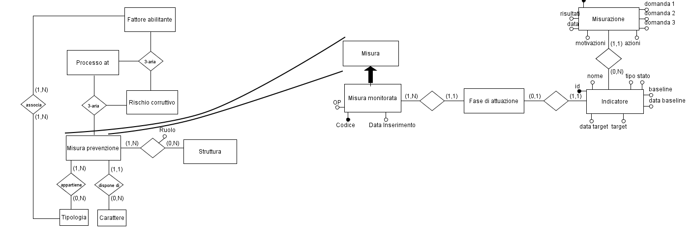

Può convenire stabilire convenzionalmente quando una misura può essere considerata “parzialmente monitorata” vs. “compiutamente monitorata”; questo, infatti, permette di consultare più agevolmente i cruscotti del monitoraggio (p.es. accesa di una icona “verde” se la misura è monitorata, “rossa” altrimenti).
Specifichiamo anzitutto che non è detto che ogni misura scomposta in fasi debba avere necessariamente almeno un indicatore. Alcune misure, infatti, pur essendo teoricamente scomponibili in fasi, potrebbero essere molto complesse da misurare tramite indicatori associati alle fasi stesse.
Facciamo un esempio: il controllo del “pantouflage” (Verifica dell’acquisizione delle dichiarazioni sul pantouflage in caso di scioglimento del rapporto di lavoro dei soggetti interessati dalla previsione normativa) può essere una misura scomponibile nelle seguenti fasi:
1ª fase: individuazione campione da analizzare
2ª fase: acquisizione delle dichiarazioni
In questo caso, si prevede di effettuare un controllo a campione sui soggetti che sono andati in pensione, chiedendogli se hanno stretto nuovi rapporti di lavoro con aziende che avevano già relazioni con l’ente in cui lavoravano prima della buonuscita. Questa è un’operazione abbastanza complessa, perché prevede di effettuare un campionamento casuale su una serie di soggetti che devono essere individuati tra quelli che lasciano l’ente. Inoltre, prevede di raccogliere le autocertificazioni dei soggetti stessi, che però non hanno più alcun rapporto con l’ente che sta effettuando le verifiche. Insomma, una misura del genere potrebbe restare a lungo senza indicatori e non ha senso considerarla “non monitorata” ma piuttosto “non monitorabile”.
Un’altra situazione potrebbe essere quella di una misura scomposta in fasi in cui non tutte le fasi hanno un indicatore associato. Anche questa situazione è legittima, perché non sempre ha senso misurare tutte le fasi di attuazione di una misura: in alcuni casi potrebbe aver senso misurare soltanto l’ultima fase, perché questa misurazione è sufficiente per stabilire se l’attuazione della misura si è realizzata o meno.
I gradi di libertà dell’associazione tra fasi e indicatori sono quindi ampi, essendo ammissibili molteplici configurazioni fase-indicatore:
misure in cui ogni fase ha un indicatore
misure in cui alcune fasi sono senza indicatore
misure in cui nessuna fase ha un indicatore.
Rispetto alla monitorabilità, le misure di mitigazione del rischio possono essere classificate come:
Una misura può non avere dettagli di monitoraggio (scomposizione in fasi, obiettivo PIAO, indicatori); in tal caso è una misura inserita nel registro delle misure, la cui applicazione può essere prevista (in stima) ma la cui effettiva applicazione non è monitorabile.
Una misura può avere dettagli monitoraggio (scomposizione in fasi) ma può darsi che nessuna delle sue fasi abbia indicatori associati (esempio del “pantouflage”); in tal caso, ai fini del monitoraggio, non è molto diversa dalla misura dell’esempio precedente: è una misura con scomposizione in fasi ma comunque non è monitorabile. Per monitorarla bisogna inserire almeno un indicatore su una delle sue fasi.
Una misura scomposta in fasi con almeno una fase collegata ad un indicatore.
Rispetto alla completezza del monitoraggio, la misure di mitigazione del rischio possono essere:
Misura non monitorabile: una misura con fasi ma senza alcun indicatore. P.es. “pantouflage” è da considerare dettagliata (in fasi) ma non monitorabile.
Misura parzialmente monitorata: una misura con fasi e indicatori ma in cui non tutti gli indicatori sono stati misurati (alcuni indicatori risultano ancora non misurati) o in cui l’indicatore “Master” non è stato misurato (nel caso del criterio “lasco” di monitoraggio).
Misura totalmente monitorata: Una misura con fasi e indicatori (p.es. 2 fasi e 1 solo indicatore collegato alla 2a fase) in cui tutti gli indicatori hanno ricevuto almeno una misurazione. Condizione necessaria e sufficiente affiché una misura possa essere considerata “totalmente monitorata” è che sia stato inserito almeno un indicatore su una delle fasi della misura e che lo stesso sia stato misurato almeno una volta.
Come sottolineato più volte, ricordiamo che un indicatore di monitoraggio non è relazionato direttamente con la misura ma solo con una sua fase e aggiungiamo che, se è vero che una fase ha al più un indicatore, un indicatore può avere zero o molte misurazioni (v. Schema E-R riportato nella Figura seguente).

Pertanto, non è sufficiente “contare” le misurazioni per concludere che la misura è totalmente o parzialmente monitorata: potrebbero infatti essere state inserite più misurazioni su uno stesso indicatore; pertanto, leggendo solo il totale delle misurazioni, non si può concludere che, se questo numero è pari al numero degli indicatori, tutti gli indicatori hanno ricevuto una misurazione. L’algoritmo che stabilisce se la misura è monitorata o meno deve essere più raffinato: deve controllare infatti che ogni indicatore abbia ricevuto almeno una misurazione (nel criterio “stretto”) o comunque deve controllare che l’indicatore “Master” abbia ricevuto almeno una misurazione (nel criterio “lasco”).